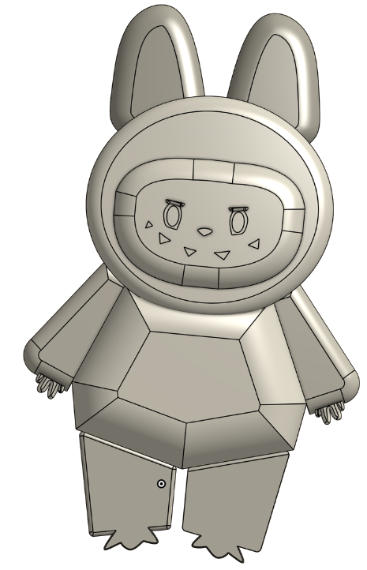
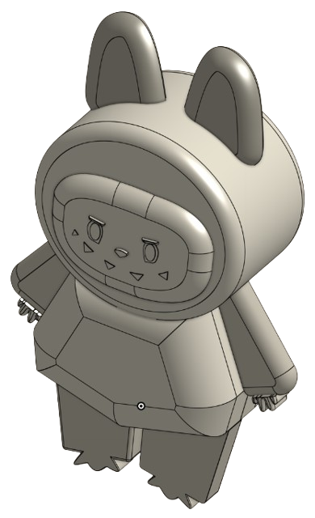

cad
project page · selected mechanical work


labubu
A little weekend modeling exercise — fan recreation of a Labubu figure in Blender, practicing surface blending and faceted geometry.
ESB Modular Gripper
Fall 2025 technical interview — designed a modular prosthetic gripper with adaptive force control and sensor feedback, sized to handle anything from an egg to a heavy object. Justified every choice from kinematics to actuator selection in this deck.
Locking Clamp
CAD competition submission — modeled a locking-clamp subsystem and wrote a step-by-step instruction manual to build it. Awarded Finalists.
watch the instructions video ↗